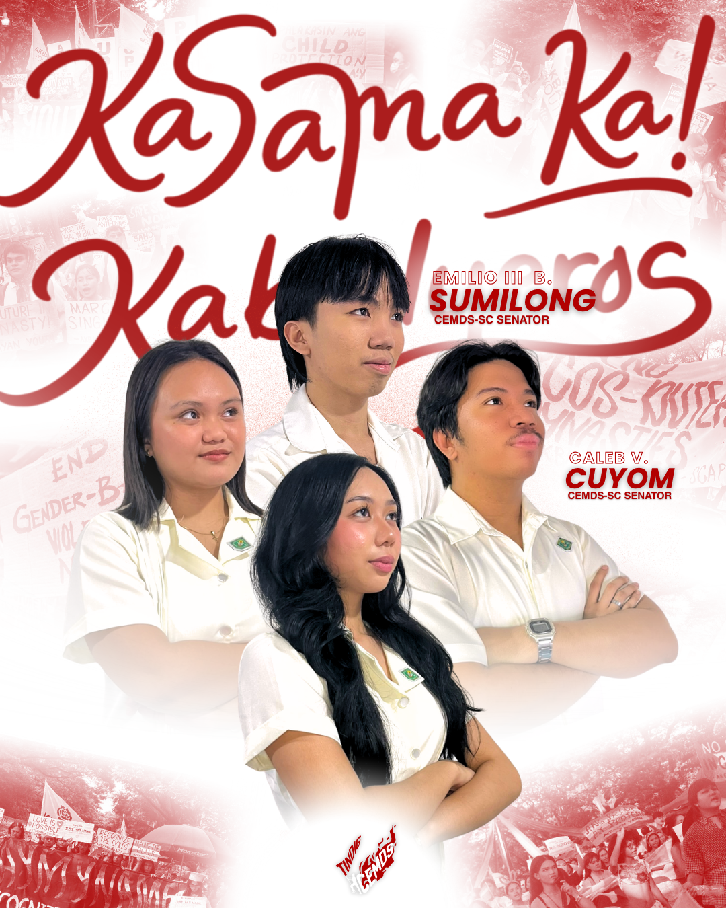

TINDIG-CEMDS
Sandigan Ng Konsehong Sumusulong Ng Tunay na Reporma at
Representasyong Pang-Masa.
#IbalikAngTiwalaSaKonseho
#KasamaKaKabalyero
#TINDIG4CEMDS

Bakit TINDIG-CEMDS?
-
Dahil ang liderato ay pananagutan, hindi pribilehiyo.
Ang posisyon sa konseho ay dapat gamitin upang maglingkod, magbantay, at manindigan para sa mga estudyante.
-
Dahil ang tunay na lider ay nakakaunawa sa kalagayan ng estudyante.
Hindi sapat ang posisyon o magandang pananalita; kailangang maramdaman at maunawaan ang totoong pinagdadaanan ng masa.
-
Dahil marunong itong makinig sa hindi napapakinggan.
Ang lider ay dapat handang pakinggan ang mga boses na madalas hindi nabibigyan ng pansin at bitbitin ang pangarap ng bawat estudyante.
-
Dahil ang konseho ay dapat magsilbi sa Masang Kabalyeros.
Ang “Upuan” ay hindi para sa naghahari-harian, kundi dapat maging sandata ng mga estudyante upang ipaglaban ang kanilang kapakanan.
-
Dahil ang pagbabago ay hindi lamang nakasalalay sa mga kandidato.
Ang tunay na pagbabago ay nagmumula sa kolektibong pagkilos at pakikilahok ng mga estudyante.
-
Dahil TINDIG CEMDS ang panawagan na sama-samang manindigan.
Hindi hinihingi ng mga kandidato na sila ang idakila; ipinapakita nilang handa silang tumindig sa likod ng mga estudyante upang magbantay, magtanggol, at maglingkod.
-
Dahil dala nito ang tatlong pangunahing paninindigan.
Kolektibong Pagkilos, Radikal na Reporma, at Manggagawa at Estudyante ang Una.
-
Sa madaling salita: TINDIG CEMDS.
Dahil ang upuan ay hindi para sa iilan—ito ay para sa bawat Kabalyero.
“Handang TUMINDIG Upang Ibalik ang Tiwala sa Konseho!”